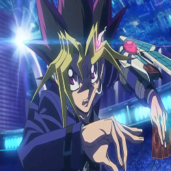

Yu-Gi-Oh!
(遊☆戯☆王 Yūgiō lit en español: El rey de los juegos)es un manga creado por Kazuki Takahashi, que ha dado lugar a una franquicia, además de múltiples series de anime, películas, juegos de cartas y numerosos videojuegos. La publicación comenzó el 30 de octubre de 1996 y finalizó el 8 de marzo de 2004 con treinta y ocho volúmenes. Se trata de uno de los mangas más populares ofrecidos en la revista Weekly Shōnen Jump de Shūeisha. La versión española del anime mantiene el nombre japonés, pero el anime traducido al español peninsular e hispanoamericano usa el nombre estadounidense. La primera adaptación a serie de anime fue por parte de Toei Animation en 1998.
Adaptaciones animadas
Yu-Gi-Oh!DM

En el año 2000, una segunda adaptación a anime titulada Yu-Gi-Oh!Duel Monstersfue producida por Studio Gallop y distribuida por la cadena de televisión TV Tokyo; esta segunda adaptación consiguió más recepción y popularidad a diferencia de la anterior, llegando a ser traducida a más de veinte idiomas y vendido en más de sesenta países, versión que fue editada en occidente por 4Kids. Finalizó el 29 de septiembre de 2004 con doscientos veinticuatro episodios. Una versión remasterizada destacando ciertos duelos comenzó a emitirse en Japón en febrero de 2015. La obra trata sobre la historia de un joven llamado Yūgi Mutō, el cual es un Duelista aficionado que porta el Puzzle Milenario o Rompecabezas del Milenio, uno de los siete Objetos Milenarios que se lo había regalado su abuelo. Además, existe un juego de cartas llamadas Duelo de Monstruos, el cual tiene más preponderancia conforme avanza la historia.
Yu-Gi-Oh!GX

Yu-Gi-Oh!GX (遊戯王 デュエルモンスターズ GX Yūgiō Dyueru Monsutāzu Jī Ekkusu) es una serie de manga y anime japonesa y continuación de Yu-Gi-Oh!, creada por Naoyuki Kageyama. Cuando la serie original finalizó con más de 224 episodios, se inició un nuevo proyecto, titulado Yu-Gi-Oh! Generation Next. El anime se inició a partir del 6 de octubre de 2004, y finalizó el 26 de marzo de 2008, con un total de 180 episodios, mientras que el manga se inició el 17 de diciembre de 2005 y terminó el 19 de marzo de 2011, incluyendo un capítulo especial impreso en el número de julio de la revista V Jump en 2014. La obra cuenta la historia de un chico llamado Jūdai Yūki, el cual ingresa en una Academia de Duelos para así lograr su sueño de convertirse en el mejor Duelista, pero tendrá que pasar muchas pruebas con ayuda de sus mejores amigos para poder lograr su objetivo.
Yu-Gi-Oh!5DS

Yu-Gi-Oh! 5DS (遊戯王 ファイブディーズ 5D's Yūgiō Faibu Dīzu) es la serie de anime que continúa de Yu-Gi-Oh! GX y basada en la original Yu-Gi-Oh!. Primera aparición de las cartas Cantante y Sincronía. Iniciado a partir del 2 de abril de 2008 en TV Tokyo, posee una duración de 154 episodios. En esta serie se cuenta la historia de un joven llamado Yūsei Fudō, el cual sin saberlo es una de las personas que se conocen como Salvadores, ya que posee la carta de un dragón legendario del cual se dice que fue en la antigüedad uno de los reyes de las estrellas, y más adelante se encuentran con otros jóvenes en su misma situación.
Yu-Gi-Oh!ZEXAL

Yu-Gi-Oh! ZEXAL (遊☆戯☆王ZEXAL Yūgiō Zearu) Aquí se introduce la Invocación de los monstruos XYZ. La serie Yu-Gi-Oh! ZEXAL comenzó a emitir con Yu-Gi-Oh! ZEXAL I el 11 de abril de 2011 y finalizó el 24 de septiembre de 2012. La primera parte consta de 73 episodios. La segunda parte, titulada Yu-Gi-Oh! ZEXAL II, comenzó a emitir el 7 de octubre de 2012 y finalizó el 23 de marzo de 2014, constando de 73 episodios. En total, consta de 146 episodios. La historia está ambientada en el futuro, en la ciudad de Heartland, donde vive el protagonista Yuma Tsukumo, un joven el cual siempre pierde con sus compañeros de la escuela hasta que un día de su amuleto (llamada Llave del Emperador) surge un espíritu llamado Astral, el cual le ayuda durante los Duelos.
Yu-Gi-Oh!ARC V

Yu-Gi-Oh! ARC-V (遊☆戯☆王ARC-V Yūgiō Āku Faibu) Es la serie donde se introdujo la Invocación por Péndulo y donde se puede ver a los personajes usar todos los diversos tipos de Invocaciones (Fusión, Sincronía, Xyz, Ritual y Péndulo). Fue anunciado por primera vez en diciembre de 2013, pero comenzó a emitir el 6 de abril de 2014. Lleva emitidos 148 episodios en Japón. La historia narra la vida de Yuya Sakaki, un estudiante de secundaria cuyo padre desapareció hace años dejándole un péndulo, el cual le permite despertar el poder de las cartas de Monstruos de Péndulo para así ganar los Duelos
Yu-Gi-Oh!VRAINS

Yu-Gi-OH! Vrains (遊戯王VRAINS Yū-Gi-O Vureinzu) En este anime se introduce las cartas enlace , así como un cambio importante en la manera de juego. Este nuevo spin-off cuenta la historia de Yusaku Fujiki y su alter ego Playmaker, que usa al entrar al mundo virtual de Vrains donde se llevan a cabo los Duelos de manera diferente a como se acostumbra. Yusaku y otros personajes tendrán que lidiar con los Caballeros de Hanói, quienes son los antagonistas en esta temporada.
Personajes
Yu-Gi-Oh! DM
Yugi Muto
El rey de los juegos
Yugi Muto (武藤 遊戯 Mutō Yūgi)Al principio, era descrito como debilucho y miedoso, tendiendo a llorar muy a menudo. De espíritu infantil, es muy fan de todo tipo de juegos (sobre todo los de mesa). Cuando Shadi entra a su "Cuarto del Alma", puede ver que está repleto de juguetes. A medida que transcurre la obra, encara las situaciones y enemigos con valor.
Vive con su abuelo Solomón Muto y su madre, la Sra. Muto. La carta insignia de Yugi Muto es Gandora el Dragón de la Destrucción
Yami Yugi
El faraon sin nombre
Yami Yugi, conocido como Yugi Oscuro (闇遊戯,Yami Yugi)es el espíritu del faraón Atem que fue sellado en el Rompecabezas del Milenio.
Yugi inicialmente desconocía su existencia y el control que Yami Yugitenía en su propio cuerpo, ya que este aparecía involuntariamente cuando él o sus amigos estaban en problemas. Es un poco reservado, ya que al comienzo no le revela su existencia a Yugi o a sus amigos. Después de que Yugi admite pensar que "otro Yugi" existe dentro de él, sus amigos toman conciencia de su existencia y lo aceptan como un amigo. En el manga es distinto, pues no es Yugi Muto quien se da cuenta primero de su existencia, sino Téa Gardner. La carta insignia de Yami Yugi es el Mago Oscuro
Seto Kaiba
El segundo mejor duelista
Seto Kaiba(海馬 瀬人, Kaiba Seto). Es en gran medida considerado un antagonista, ya que sus acciones suelen ser egocéntricas de puro interés personal y desconsideradas, pero en algunas ocasiones sus acciones se tornan en una buena causa. El antiguo mejor Duelista, pierde el título ante Yugi Muto. Su Deck se caracteriza por tener sus 3 cartas de Dragón Blanco de Ojos Azules ya que posee tres de las cuatro únicas copias que existen en el mundo. Con respecto a la cuarta carta, él mismo la destrozó para evitar que la usasen en su contra, ya que debido a las reglas del juego, un Deck sólo puede llevar hasta tres copias de la misma carta.La carta insignia de Seto Kaiba es el Dragón Blanco de Ojos Azules
Yu-Gi-OH! GX
Judai Yūki
El amigo de los espiritus
Judai Yūki (遊城 十代, Yūki Jūdai)Asistió a la Academia de Duelos y estuvo en el dormitorio Slifer Rojo, el dormitorio de rango mas bajo, debido a sus pobres resultados en el examen de ingreso. A medida que pasa el tiempo, se convierte en el mejor Duelista de la Academia y salva al mundo y a la Academia de muchas amenazas como el malvado Kagemaru, la Luz de la Destrucción que controlaba a Sartorius, la manipuladora Yubel y finalmente al espíritu de la oscuridad Velo Nocturno. Después de tres años, se gradúa de la Academia de Duelos y comienza su propio viaje para mejorar como Duelista. La carta insignia de Yuki Judai es el Héroe Elemental Neos
Manjoume Jun
El multi mazos
Manjoume Jun (万丈目準, Manjōme Jun) Manjoume es un estudiante inteligente y con mucho potencial, aunque la mayoría lo usa para intentar derrotar a Judai, además de ser muy orgulloso. Al comienzo creía que el Duelo de Monstruos era únicamente para la élite de los mejores, una vez escapo de la Academia de duelos y para ingresar a la academia rival, armo un mazo con cartas repartidas por todo un glaciar. La carta insignia de Manjoume es la carta Rey Ojama
Yu-Gi-OH! 5DS
Yusei Fudo
El salvador de la humanidad
Yusei Fudo(不動遊星, Fudō Yūsei) es uno de los Salvadores, también es el actual Rey de los Juegos. Es conocido por muchos y respetado por otros. Su considerable habilidad como Duelista, y su personalidad tranquila e inteligente lo hacen uno de los mejores. Usa un Duel Runner llamado Yusei Go. La carta insignia de Yusei Fudo es el Dragon Polvo de Estrellas
Jack Atlas
El rey de la velocidad
Jack Atlas(ジャック・アトラス)Jakku Atorasu es el rival de Yusei Fudo, así como uno de sus amigos más cercanos es uno de los Salvadores con la Marca del Dragón en su brazo derecho. Jack puede ser un manipulador, hasta el punto de incluso usar a sus propios amigos para conseguir lo que quiere. Sin embargo, con el tiempo se da cuenta del error de sus actos y se vuelve menos manipulador. Durante sus Duelos afirma que le gusta entretener a la multitud y, como tal, es a menudo muy teatral en sus Duelos. Se le conoce como el Rey de los Turbo Duelos, pero principalmente por El Rey. Habla de sí mismo en tercera persona y anuncia a la multitud, antes, durante y después de sus Duelos, ¡Solo existe un rey, ese soy yo!
. La carta insignia de Jack es el Dragón Rojo Archidemonio
Yu-Gi-OH! ZEXAL
Yuma Tsukumo
El chico milagroso
Yuma Tsukumo(九十九 遊馬 Tsukumo Yūma) Es un joven Duelista que aspira a ser el más grande, a pesar de sus pocas habilidades. Se encuentra a sí mismo sin querer colaborando con la misteriosa entidad Duelista conocida como Astral. Juntos buscan las Cartas de Monstruo Número para recuperar los recuerdos perdidos de Astral, convirtiéndose en un cazador de monstruos Número. Más adelante, consiguieron el poder de ZEXAL y momentáneamente se fusionaron juntos en una sola entidad para enfrentarse a los adversarios mas fuertes. Yuma ayuda a Astral a recuperar las cartas Número y conforme avanza la serie, aprende las verdades que conectan su destino a través de su querido padre, Kazuma Tsukumo, y termina convirtiéndose en el participante mas importante en la guerra interdimensional entre el Mundo Astral y el Mundo Barian, poniendo fin al conflicto. La carta insignia de Yuma Tsukumo es el numero 39 Utopia
Ryoga Kamishiro
El rey de los Barian
Ryoga Kamishiro(神代凌牙 Kamishiro Ryōga) Después de ser descalificado del Circuito Nacional de Duelos, Ryoga se convirtió en alguien malhumorado e indiferente, carácter que se mantenía a principios de la serie. Frío y malicioso, Ryoga hace alarde de su poder, tomando los Decks de las personas a las que derrota como si fueran trofeos, como cuando derrotó a Bronk Stone. Cuando es poseído por los monstruos Número, se vuelve bastante violento, destruyendo todo a su alrededor. Más tarde se reveló que es en realidad Nash, el líder de los Siete Emperadores Barian. Decidido a no dejar que su pueblo sufra más tragedias como en el pasado, traicionó a Yuma y sus amigos y se unió al Mundo Barian. Participó en la última batalla como Nash, pero unió fuerzas con Yuma para derrotar a Don Milenario. Más tarde desapareció después de perder frente a Yuma en un último Duelo que tuvo a los mundos humanos y Barian en juego. Él, junto con los Siete Emperadores Barian, revivió gracias al poder del Código Númeron. La carta insignia de Ryoga es el Número 32 Draco Tiburón
Yu-Gi-OH! ARC V
Yuya Sasaki
El duelista entretenedor
Yuya Sasaki(榊 遊矢 Sakaki Yūya) Él es un estudiante de la Escuela de Duelos Tú Show, que sueña con convertirse en un Dueltretenedor, un tipo de Duelista profesional, como su padre. Él es el pionero de la Invocación por Péndulo. Después de ganar la Copa de la Amistad, Yuya se convirtió en el nuevo Rey de los Duelos en la Dimensión de Sincronía. Él es uno de los Lancers. La carta insignia de Yuya Sasaki es el Dragón de Péndulo de Ojos Anómalos
Reiji Akaba
El súper duelista de elite
Reiji Akaba(Akaba Reiji 赤馬 零児) Es el Duelista más joven en la historia en ser certificado para el Duelo en el circuito profesional, después de haber cumplido los 15 años. Él es también el fundador de los Lancers. En general, Reiji tiene un comportamiento serio y misterioso, pero interesado en Yuya Sakaki y su colgante. A pesar de sus habilidades avanzadas, no parece ser arrogante y en realidad es bastante respetuoso. Reiji también demuestra un gran respeto por el padre de Yuya, Yusho Sakaki, al punto de defenderlo ferozmente cuando fue insultado en un raro momento de emoción. Más tarde admite que, si bien los sentimientos de Yuya dieron luz a un gran poder, esto no siempre ayuda y que las emociones todavía pueden costarle a uno en el campo de batalla.
Yu-Gi-OH VRAINS
Yusaku Fujiki
El emisario de la venganza
Yusaku Fujiki(藤木 遊作, Fujiki Yūsaku) Fue una de las víctimas del Proyecto Hanoi, que resultó en la creación del Ignis Oscuro, Ai. Después de su rescate, comenzó a cazar a los Caballeros de Hanoi en ENLACE VRAINS bajo el nombre de Desconocido (アンノウン, An'noun). Después de conocer a Kolter, comenzó a trabajar bajo el nombre de Playmaker (プレイメーカー, Pureimēkā). Es conocido como el héroe de VRAINS tras derrotar a los Caballeros de Hanoi. Yusaku puede parecer frío y apático. Es descrito como un chico al que no le gusta sobresalir en la escuela, no porque sea tímido, sino porque es un hacker. Sin embargo, se ve envuelto en encuentros con la gente mientras intenta tener Duelos. Debido a un cierto incidente, generalmente trata de evitar el contacto con otros y sólo parece confiar en Kal Kolter. La carta insignia de Yusaku Fujiki es el Decodificador Hablador
Ai Ignis
El ignis oscuro
Ai Ignis (闇イグニス, Yami no Igunisu) Después de su victoria y la de Yusaku sobre Bohman, Ai sería el último Ignis que queda. Tomando una apariencia humana, y pudiendo manifestar esta apariencia en el mundo real a través de un androide SOLtis robado, se convierte en un antagonista, tomando a Roboppi como compañero después de darle libre albedrío y planeanndo usar a Tecnologías SOL para sus propios fines. Se reveló que hizo esto para provocar su propia eliminación por temor a que él mismo se volviese una amenaza para la humanidad. Finalmente consiguió su deseo después de ser derrotado por Playmaker y, por lo tanto, se convirtió en el sexto y último Ignis en ser eliminado. Sin embargo, Ai fue visto brevemente, recreado 3 meses después de su final. La carta insignia de Ai Ignis es La Llegada Ciberso @Ignister
Juego de cartas

Yu-Gi-Oh! es un juego de cartas de monstruos en el que cada jugador roba cartas de sus respectivas barajas (Decks) y toman turnos en los que se juegan las cartas en la mesa (conocida como Campo). Cada jugador comienza con un número determinado de LP traducido como Puntos de Vida (8000, según las reglas oficiales), y un mazo de cartas llamado Deck que debe contener un mínimo de 40 cartas y un máximo de 60, así como la posibilidad de tener un Side Deck de apoyo entre 0 a 15 cartas y un Deck Extra entre 0 a 15 cartas. La partida termina si se cumple una de las siguientes condiciones:
- Si los LP de un jugador llegan a 0.
- Que uno o ambos jugadores no tengan cartas en el Deck y deban robar una carta.
- Un jugador se rinde, para esto, se debe colocar la mano encima del Deck por diez segundos.
- Un jugador gana por el efecto de una carta. (Ejemplo, Exodia, el prohibido , Tablero del Destino o Cuenta Atrás Final)

Se produce un Duelo por turnos en el que los jugadores usan cartas que representan monstruos, Cartas Mágicas y Cartas de Trampa para combatir a sus adversarios. Los jugadores pueden Invocar a los monstruos ya sea en Posición de Ataque boca arriba (vertical) o en Posición de Defensa boca abajo (horizontal), y cada monstruo en Posición de Ataque puede atacar una vez por turno a menos que haya un efecto que designe otra cosa. Tras atacar y destruir con éxito un monstruo del adversario, el jugador del turno puede infligir daño a los LP del adversario si el ATK de su monstruo es superior al ATK del monstruo adversario en Posición de Ataque. Si el monstruo atacado está en Posición de Defensa, se compara el ATK del monstruo en ataque y la DEF del monstruo en defensa. Si el ATK es superior a la DEF lo destruye pero sin infligir daño al adversario, a menos que el efecto de alguna carta permita infligir la diferencia entre la DEF del monstruo destruido y el ATK del monstruo que lo destruyó.